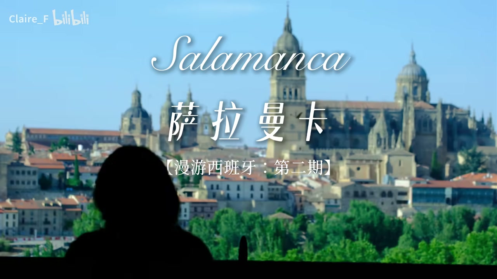
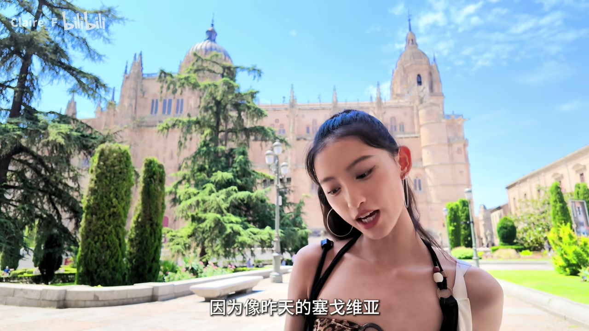
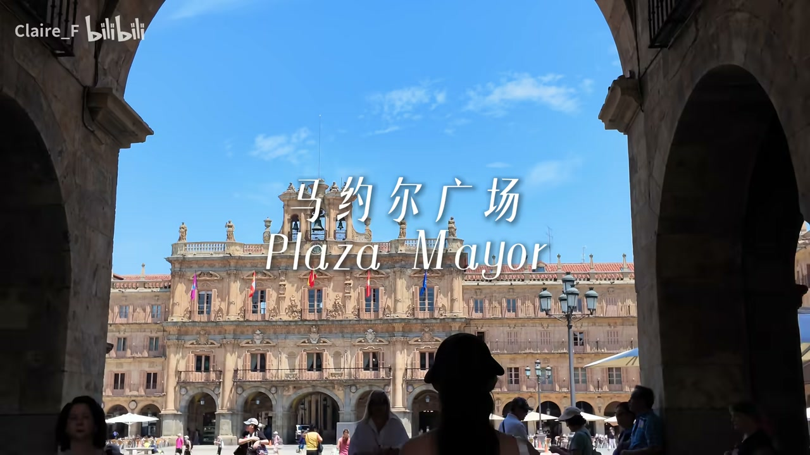

抵达萨拉曼卡：空城与100欧的风景
00:00开始录制：欢迎收看漫游西班牙第二季萨拉曼卡。从萨拉曼卡的路上下来的路上路过了一座小城，完全是空城，整个城一个人都没有，好吓人。
00:30抵达酒店：光是看到酒店大堂就感觉房间会很不错。妈妈正在 check in。欧洲特色的直载电梯（开放式）、欧洲特色一楼——我们在零楼要去一楼。
00:55打开房间的景色：对焦一下。反正这个城市实在太小了，没什么人来。这么好的景色居然才100欧！看这大片的天空，但其实已经晚上8点了。

傍晚采购与一夜好眠
01:10天色还亮着，打算去买一些水果和菜。走。天虽然还亮，但随便吃一点就睡，明天见。
01:30没有救了，现在是上午9点，睡了10个多小时才睡醒。早上穿衣服时它（衣服？）就断了。吃完饭、化完妆，出发。
罗马桥：2000年与16世纪的拼接
02:00又是一座罗马人留下的遗迹。但并不是整座桥都是2000年前的——之前洪水冲塌过一次，离咱们近的这一半是16世纪左右新建的，那边是2000年前的桥。
02:15走这个桥就像走时间长廊一样，从新的世纪走向2000年前的老城，挺有意思的。
02:25前面有一个无头石牛。这不是2000年前的石牛，而是2500多年前——比罗马人更先来到这里开垦的凯尔特人部族的图腾。
- 洪水曾冲塌旧桥，近岸一半为16世纪重建
- 远岸一半仍是2000年前的罗马原桥
- 桥上无头石牛是凯尔特人（早于罗马人）2500年前的图腾
双座大教堂：舍不得拆旧的世界罕见
03:00这就是萨拉曼卡的双座大教堂，全世界都非常罕见的两个教堂连在一起。
03:10因为像昨天看到的塞哥维亚，他们的教堂都是把新的建了以后就把旧的给拆了。但这里他们舍不得拆旧的，最后就变成两座教堂连在一起。左边小的那个是新的教堂，右边那个是旧的教堂。
03:20西班牙女郎梗：作者说自己是西班牙女郎，主要是因为黑。还有五官。刚才往这个方向走，一整团旅游团的高中生们都在跟她打招呼说拜拜。

萨拉曼卡大学：找青蛙与神权豁免
03:40欢迎来到世界上最古老的大学之一——萨拉曼卡大学。你试试看可以找到青蛙吗？据说如果你能找到墙上的青蛙，这学期就不用挂科了。
04:00在中世纪神权至上的时代，这所大学有非常高贵的豁免权：如果大学学生在城里犯了法，警察是不可以来抓你的——他们有自己的法庭和监狱来决定这个学生的去处。
04:20贝壳之家（Casa de las Conchas）：最喜欢的一种说法是——男主人家族的徽章是扇贝，他妻子的家族是何欢花（？），他就把它们融合在一起，炫耀他对妻子的爱，搞了这么这么多。
- 墙上的青蛙 = 好运符号，找到就不挂科
- 中世纪大学拥有司法豁免权：犯法的学生由大学自己的法庭审判
- 贝壳之家的扇贝徽章，是丈夫融合家族与妻子家族徽章的爱的炫耀
黄金之城：红砂石与咖啡时光
04:30从昨天到今天每次拍照都有人跟我互动，搞得我瞬间不太好意思。找了一个地方坐下来喝点咖啡。
04:40这周围的建筑物都是当地产的红砂石建的，所以萨拉曼卡还有一个名字叫做'黄金之城'（La Dorada）。
04:50一个修道院也非常精致。看完我们走了，古罗马的桥进城，现在我们走现在的桥，要离开这个非常有文化气质的城市了，今天赶往葡萄牙。接下来的几天西班牙都是四十几度的高温。
